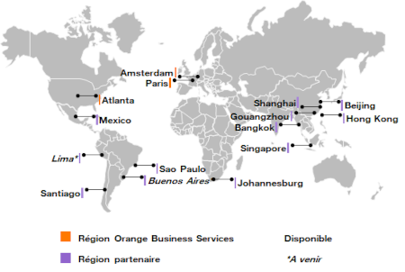

Orange Business Services est une entité du groupe Orange, destinée à proposer des services télécoms et informatiques aux entreprises : téléphonie mobile, accès Internet pro, cloud computing ou machine to machine. La société couvre les domaines de la connectivité, de l’Internet, la cybersécurité, du Cloud, de la sécurisation des données, de la modernisation de l’infrastructure réseau et de l’innovation. Orange Business Services est un acteur global avec une présence locale qui peut délivrer des solutions sur un site industriel et les répliquer ensuite globalement.
Activité de l'entreprise
Produits et services
Mobilité

La société propose aussi des forfaits et des applications mobiles ainsi qu’un accompagnement pour tous vos problèmes de connectivité. Face au développement accéléré de la mobilité et à l’essor des nouveaux modes de travail,il devient nécessaire d’employer des connexions en 4G et en 5G en France et à l’international à l’aide d’un opérateur et fournisseur de services de confiance.
Organisation

Geographique
Orange Business Service opère dans 220 pays et territoires. Son siège social se situe à “1 Pl des droits de l’homme 93210 Saint-Denis France.” La société détient plus de 29 100 collaborateurs présents dans 65 pays.
Operationelle
La société réunit ses associés, aussi appelés actionnaires, qui investissent dans le capital de l'entreprise. C’est pourquoi Orange Business Services est aussi une société de capitaux. Elle se focalise sur les apports des associés au capital social de l'entreprise, c'est-à-dire l’argent qu’apporte une associé à l’entreprise.
Juridique
Orange Business Services se définit comme une société anonyme à conseil d'administration. C’est une société dont la direction est assurée par sa directrice générale, Aliette Mousnier-Lompré, et un conseil d'administration.
Stratégie de l'entreprise
Leader mondial
Orange Business Services est un leader mondial de la transformation digitale. La societé est numéro un en matière de réseaux voix/données dans le monde. Elle étend son activité dans plus de 220 pays et territoires couverts. En Europe, la société investit pour assurer le déploiement de la 4G et de la Fibre. Parallèlement, elle explore de nouveaux territoires dans le monde afin d’anticiper les besoins de ses clients et préparer.
Innovation
Orange Business Services mise avant tout sur l'innovation. Elle met les enjeux de ses clients au centre de son activité, et crée des solutions innovantes et sur-mesure, qui leur permettent de garder un temps d’avance sur l’évolution des nouvelles technologies.
Recherche et investissent
Plus de 600 millions d’euros sont consacrés à la recherche et à l’innovation, et la société possède plus d’une centaine de partenariats avec des laboratoires et universités. Orange Business Services soutient plus de 500 startups dans leur développement numérique.
Valeurs
« L’Orange Attitude », comme le surnomme l’entreprise, repose sur 6 principes fondamentaux : La proximité, le dynamisme, la simplicité, la modernité, la transparence et la responsabilité. La marque veut que ces valeurs soient appliquées au quotidien. Ces dernières étant des principes moraux, elles servent aussi à la stratégie marketing de l’entreprise. Elles s’adressent autant aux salariés d’Orange et à leurs méthodes de travail qu’au relationnel avec les clients. La parité hommes/femmes est tout aussi importante chez Orange Business Services.